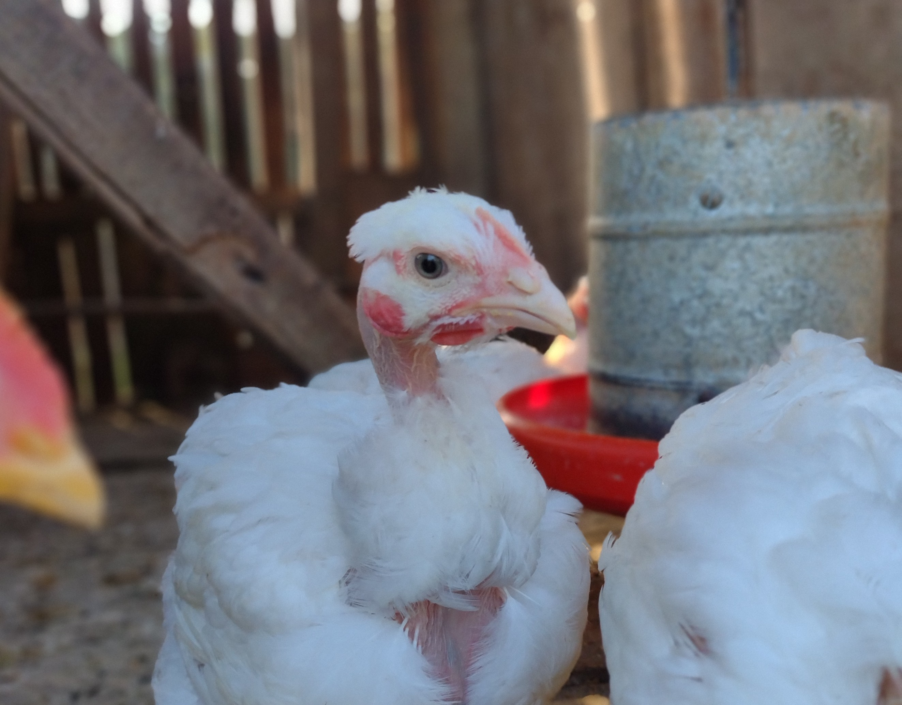

A interação entre o campo e a cidade, a cada ano vem se tornando mais importante!
Alimentação
Desde a Agricultura 1.0, esse é um setor muito importante para as sociedades. Com a Agricultura Digital (4.0), a interação campo-cidade se torna cada vez mais necessária.
Benefícios para:
- Agricultores;
- Pecuaristas;
- Startups;
- Consumidores;
- Empresas de tecnologia;
Fonte: arquivo pessoal.

Fonte: arquivo pessoal.
Como ocorrem:
Essas interações ocorrem desde a logística para produtos chegarem mais rápido aos supermercados até o uso de drones e robôs que alimentam e monitoram animais, ordenham vacas, e identificam plantas e insetos prejudiciais nas plantações.
Resultados dessas parcerias:
- Maior quantidade e qualidade de alimentos;
- Produtos mais sustentáveis e baratos.